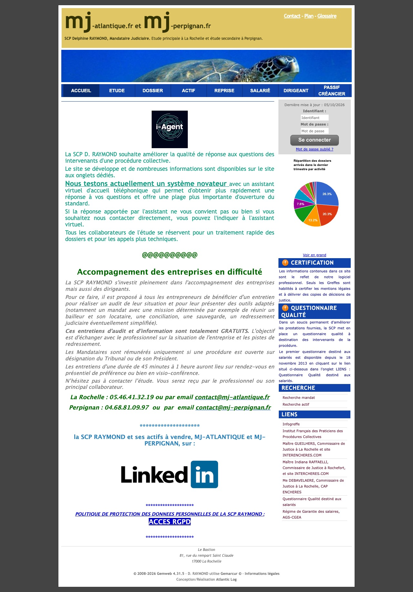
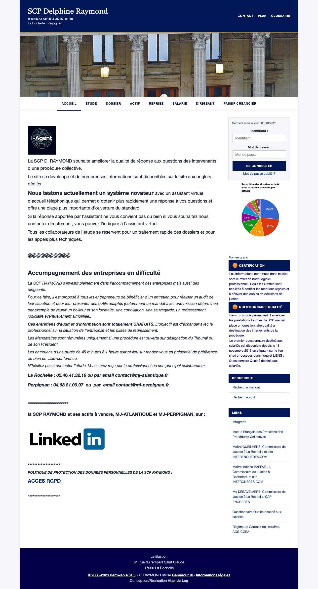
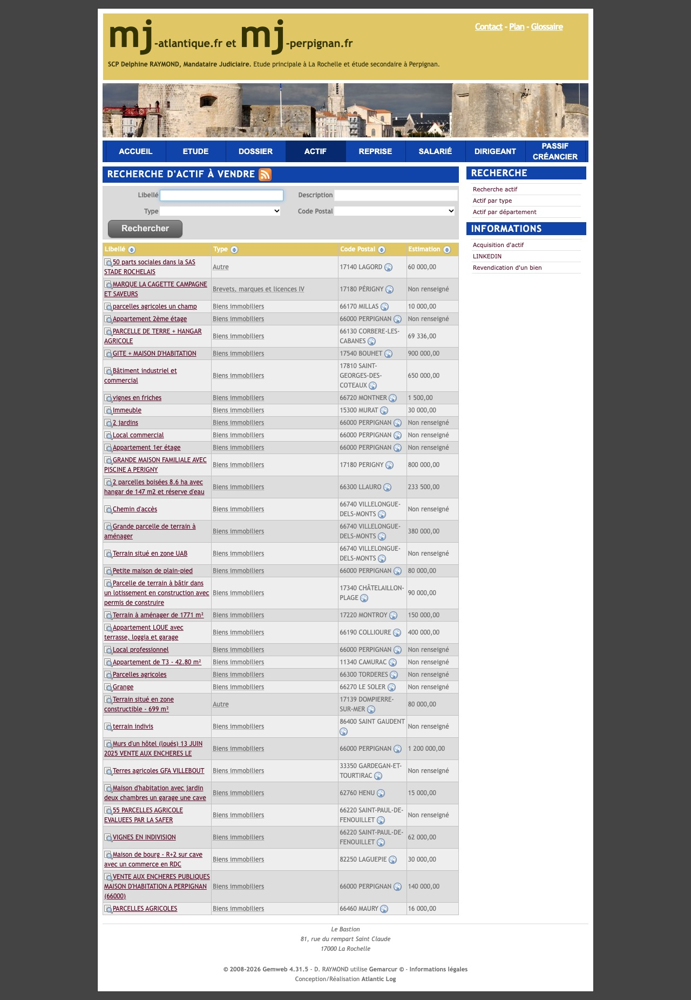
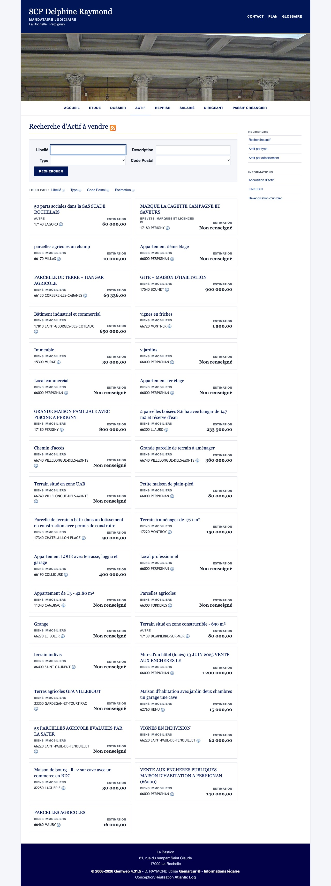

Page d'accueil




Recherche d'actifs




Cliquez sur une image pour l'agrandir. Nouvelle page d'accueil : mj-atlantique.pages.dev
Essai réalisé sur ordinateur — rien n'a été modifié sur le site en ligne.




Cliquez sur une image pour l'agrandir. Nouvelle page d'accueil : mj-atlantique.pages.dev